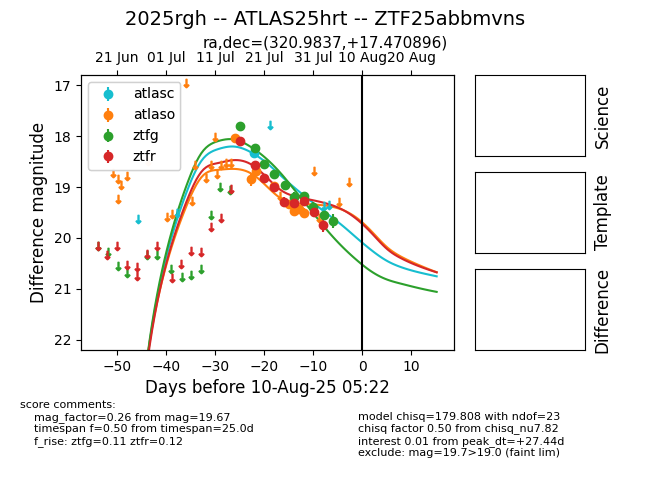

Target 2025rgh at 2025-08-10 05:22, see:
FINK: fink-portal.org/2025rgh
Lasair: lasair-ztf.lsst.ac.uk/objects/2025rgh
ALeRCE: alerce.online/object/2025rgh
TNS: wis-tns.org/object/2025rgh
YSE: ziggy.ucolick.org/yse/transient_detail/2025rgh
alt names
ZTF25abbmvns (ztf,fink)
2025rgh (tns,yse)
ATLAS25hrt (atlas)
coordinates:
equatorial (ra, dec) = (320.9837,+17.47090)
galactic (l, b) = (68.4558,-22.78086)
photometry
last atlasc=18.34, atlaso=19.52, ztfg=19.67, ztfr=19.75
1 atlasc, 8 atlaso, 10 ztfg, 9 ztfr detections
